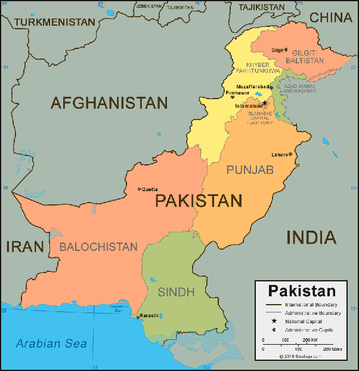
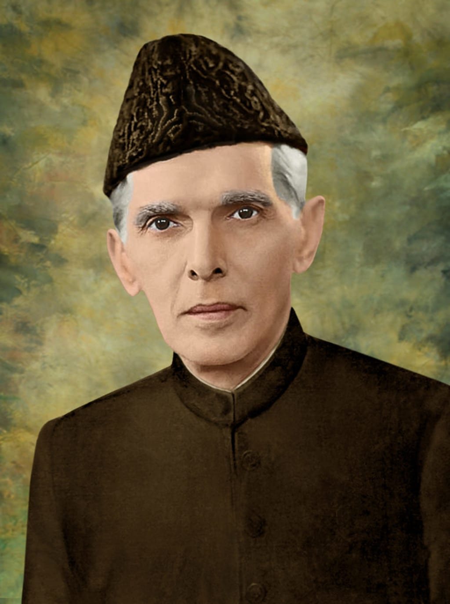
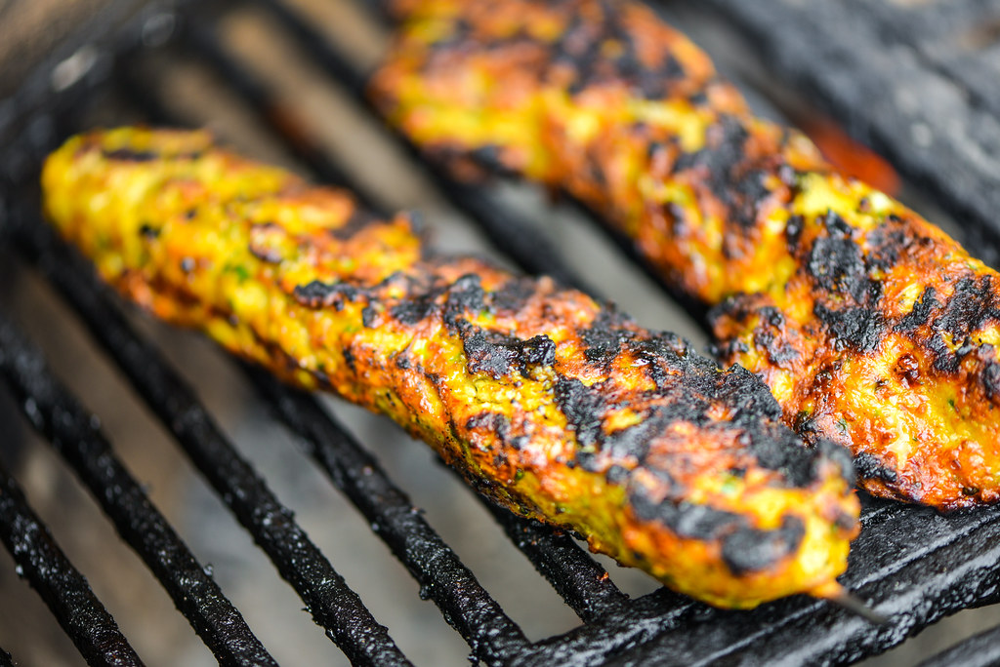
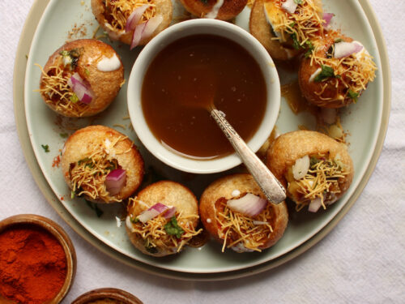
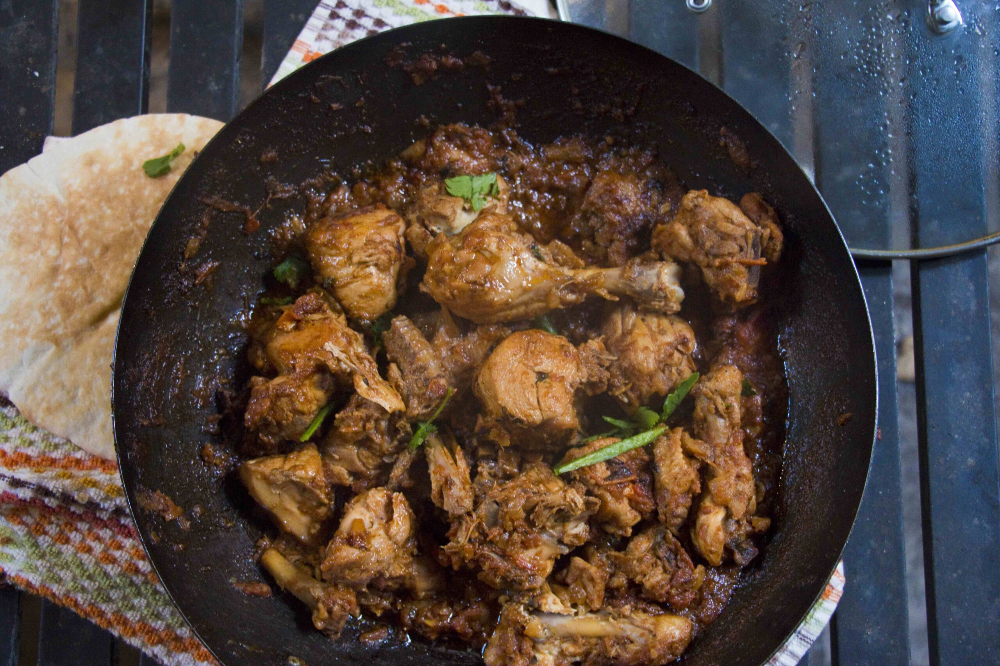
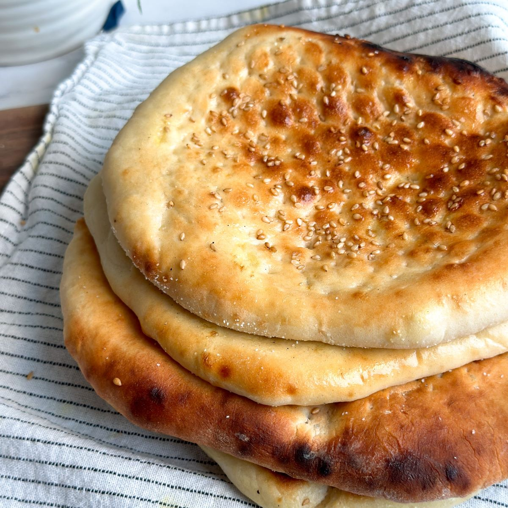
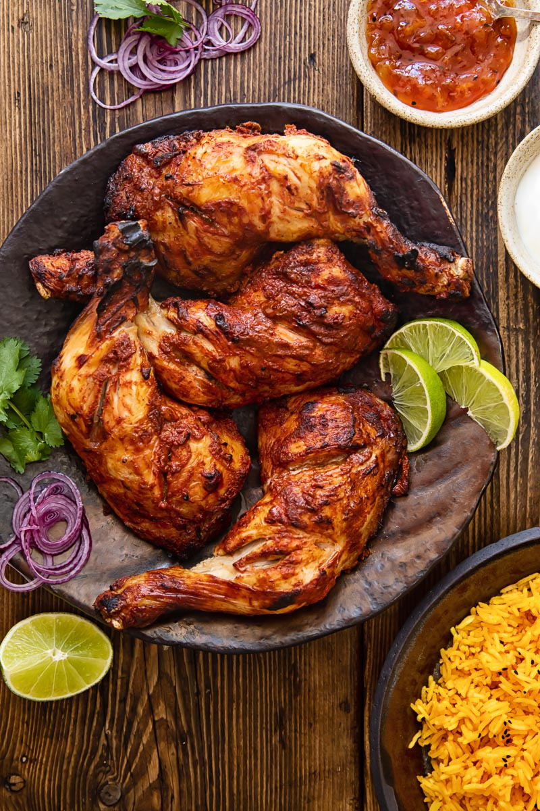

Welcome to Pakistan!
Are you someone with roots in Pakistan, a student researching for a project, or just a curious
mind eager to learn? No matter who you are, you've come to the right place! This website is your
gateway to exploring Pakistan—a land rich in history, culture, breathtaking landscapes, and vibrant
traditions. From the majestic peaks of the Himalayas to the bustling streets of Karachi, from centuries-old
heritage sites to modern innovations, Pakistan is a country of contrasts and stories waiting to be told. Dive
in and uncover everything from its deep historical roots to its dynamic present. Let’s embark on this journey
together and discover the heart of Pakistan!
History of Pakistan
Pakistan used to be ruled by Great Britain and was known as British India. Pakistan got
it's independance in August 14, 1947, which is also known as Pakistan Independance day.
After British India was free from Britain, India and Pakistan suffered from religous conflict.
Mohandas Gandhi wanted the muslims and hindus to live together peacefully, but the
muslims wanted to live seperately from the hindus. Since Mohandas Gandhi didn't want
war, they gave the muslims their own land, known as Pakistan.
Brief Description and Geography
Pakistan is a small country in South Asia. It is bordered by Afghanistan, China, India, and
Iran. The geography of Pakistan is diverse with the Thar Desert in the east and the Hindu Kush
and Pamir mountain ranges in the north. The main physical features of Pakistan include the northern
mountains (Himalayas, Karakoram, Hindu Kush), western mountains (Sulaiman, Kirthar), fertile plains and
flowing rivers of Punjab and Sindh, coastal areas along the Arabian Sea, and the Thar Desert. It is the
fifth-most populous country, with a population of over 241.5 million. It also has the second-largest
Muslim population as of 2023. Islamabad is the nation's capital.
Pakistan's Provinces

Balochistan:
Balochistan is known for its long coastal belt
which extends from Karachi through Sonmiani, Ormara,
Kalmat, Pasni, Gwadar, Jiwani and all the way up to
Iran. It is also popular for its hill tops and rugged
mountainous terrain, and being the biggest province,
but the least populated. To learn more, click here
Khyber:
Since it was part of the ancient Silk Road, it has been a vital
trade route between Central Asia and the Indian subcontinent and a
strategic military choke point for various states that controlled it.
The Khyber Pass is considered one of the most famous mountain passes
in the world. To learn more,
Famous Pakistanis
Muhammad Ali Jinnah:
was an Indian Muslim politician, who was the founder and first
governor-general (1947–48) of Pakistan.

To learn more, click here
Mohammed Iqbal:
a South Asian Islamic philosopher, poet and politician. His poetry is considered
to be among the greatest of the 20th century, and his vision of a cultural and political
ideal for the Muslims of British-ruled India[9] is widely regarded as having animated the impulse
for the Pakistan Movement. He is commonly referred to by the honourific Allama (Persian: علامه
, transl."learned") and widely considered one of the most important and influential Muslim thinkers and
Western religious philosophers of the 20th century. To learn more, click here
Hafeez Jalandhari:
Dr. Abdul Qadeer Khan:
was a Pakistani nuclear physicist and metallurgical engineer who is
colloquially known as the "father of Pakistan's atomic weapons program"
and the person who made Pakistan safe. To learn more, click here
Dr.Abdus Salam:
a Pakistani theoretical physicist. He shared the 1979 Nobel Prize
in Physics with Sheldon Glashow and Steven Weinberg for his contribution
to the electroweak unification theory.[8] He was the first Pakistani and
the first scientist from an Islamic country to receive a Nobel Prize and
the second from an Islamic country to receive any Nobel Prize, after Anwar
Sadat of Egypt.
Imran Khan
Imran Khan is the most famous and influential political personality in
Pakistan today. Over time, Imran has gained more popularity among the
Pakistani nation. He is also disliked by the goverment and has been
shot at 3 times and still survived. He also used to be the leader of
the pakistani cricket team. To learn more, click here
Samina Baig
The first Pakistani woman to climb Mount Everest and all seven of
the world's highest peaks
Religon and Customs
The majority of Pakistan follows the religon islam and
speakes the language urdu.
Some behavior customs are:
Wearing modest clothing that doesn't draw attention to one's figure
Standing when someone enters a room
Not sitting with one's legs outstretched
Not laughing loudly in public
Not interacting with children, regardless of age
Not bringing alcohol as a gift. See more about this in islam
Some communication styles are:
Indirect, expressive, and loud communication
Avoiding eye contact
Interrupting and speaking over people
Avoiding direct answers to avoid confrontation
long conversations with pauses and open-ended questions
Some cutural values are:
Collectivist culture, where people are loyal to those
in their inner circle
Social connections are important for daily life
The concept of wasta, which is relationship forming
Child naming ceremonies are held 40 days after birth
Ramadan is a holy month for Muslims, where they fast, pray, and reflect
Monuments of Pakistan
Minar-e-Pakistan
located in Lahore.
Mazar-E-Quaid
located in Karachi.
Pakistan Monument
located in Islamabad
Wazir Mansion (Birthplace of Muhammad Ali Jinnah)
located in Karachi
Allama Iqbal's (pakistan's national poet) Tomb
located in Lahore
Allama Iqbal Museum
located in Lahore
Islamic Summit Minar
located in Lahore
Khaliq Dina Public Hall and Library
located in Karachi
Quiad E Azam House Museum
located in Karachi
Pakistan's Economy and Jobs
Some of the highest paying jobs in Pakistan are:
Chartered Accountant
description of job:
a job in which a person handles all financial matters
review reports and organize the company's finances
ensures that how much the company is spending and in which departments
manages the earnings department wise
sees how much a department earns and how much is the exact spending of
running each space
the more a doctor gets to work the more they earn money
great amount of money is offered to doctors for any treatment
A good doctor has more popularity, which means the raise in income gets higher
money earnt per month = 77,500 pakistani rupees, 278.74 dollars
P.S, this is just the average, but the money actually varies
IT Professional:
description of job:
Software engineers and programmers in this field get great knowledge and polish their
skills to match the competency in the market
Learns new techniques and implements them into new productions
has more chances to earn bundles from big companies.
money earnt per month= 25,115 pakistani rupees, 90.91 dollars
Engineer:
description of job:
All types of engineers who are skilled and experts in the relevant field, can get hired in
any renowned company and make good money
Electrical engineers, software engineers, aeronautical engineers, and other engineering fields
are highly paid in the market
Each field has its worth in the market
salary per month: 60,000 pakistani rupees, 215.80 dollars
Why you should go to Pakistan
Here are some reasons you should go to Pakistan:
Even the small mountains are huge, which is good for hikers
Unbelievable landscapes and breathtaking geography, great for sightseeing
Everything is possible in Pakistan, which is actually true, except for haram/illegal
Pakistan is safe, and the armed forces will do anything to protect it
The cultural diversity from one region to the next
The food is incredible, and you can even find it in the U.S, but still yummy
Traveling in pakistan is cheap, like, the 2nd cheapest country in the world
Pakistan has many natural wonders, including the world's third highest mountain, Tirich Mir, and the second
highest, K2
Pakistanis are known for being friendly and welcoming. Visitors may be invited into someone's home to drink
chai or share a meal.
Pakistan has many opportunities for hiking and mountaineering, especially in the Karakoram range
Some notes for visiting to Pakistan:
The best time to visit Pakistan is May-October
It's recommended to bring fleeces
Food They Eat
Some food and drinks pakistan are famous for are:
Nihari. Known as the "national dish of Pakistan"
Chicken Lahori. Has always been one of the most popular curries in Pakistan
Pakoras. Pakoras are best eaten while still hot
Kebabs. There are many different kinds of kebabs in Pakistani culture, including the shami kebab

Gol gappa. Gol gappa is a popular streetfood

Biryani. A popular rice dish made with a variety of meats, vegetables, and spices, often served with yogurt or
raita
Chicken karahi.A dish of chicken cooked in a thick, spiced tomato gravy with ginger-garlic and cardamom, often
served with roti or naan 
Sajji.A dish of salt-marinated, skewered, and roasted whole chicken or lamb, often stuffed with potatoes or rice,
and traditionally roasted over an open fire
Bun kebab.A street food consisting of a bun filled with a shami kebab patty, omelet, thinly sliced vegetables, and
chutneys
Paratha. A Punjabi bread made with flour, oil, and sometimes ghee, often served with daal or spicy curries
Lassi. A traditional drink made from yogurt, water, and spices, often with the addition of fruit
Roghni naan. A type of Pakistani bread that is much softer and fluffier than other types of bread

Chapli kebab. A traditional dish from the Peshawar region of Pakistan, often served with sauces, chutney, and yogurt
alongside with naan or bread
Haleem. A stew made with meat and lentils, spiced with coriander, fresh ginger, and chilli peppers, and garnished with
fried onions and lemon
Tandoori chicken. A national food of Pakistan, made by marinating chicken in a mixture of yogurt, lemon juice,
and spices, and traditionally cooked in a tandoor oven
